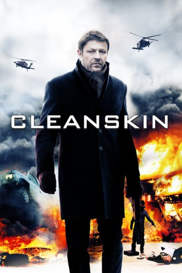

#1764 Cleanskin - Bis zum Anschlag
Alternativ: Cleanskin
 
 IMDB-Wertung: 6.3 / 10
IMDB-Wertung: 6.3 / 10  Metascore: 0
Metascore: 0 
Während seines Undercover-Einsatzes in Diensten eines internationalen Waffenschiebers mopsen islamistische Terroristen dem britischen Geheimagenten Harry eine Packung Semtex. Bevor sie den Sprenstoff nun womöglich in irgendeiner Londoner Lokalität zur Explosion bringen, soll Harry die Täter aufspüren und neutralisieren. Der in seiner Ehre tief gekränkte Ex-Elitesoldat zieht daraufhin in einen regelrechten Privatkrieg, während anderswo in der Stadt sein zentraler Gegenspieler auf seinen großen Moment vorbereitet wird.
Jahr: 2012
Dauer: 108 Minuten
FSK: 16
Land: England Studio: Entertainment OneTonspuren: DTS - ,
Untertitel: Deutsch,
Auflösung: 1080p (1920x800) Größe: 16076 MB
Genre: Krimi, Drama, Thriller
Regisseur: Hadi Hajaig
Drehbuch: Hadi Hajaig
Soundtrack: Simon Lambros
Darsteller:
 Sean Bean als Ewan
Sean Bean als Ewan Charlotte Rampling als Charlotte
Charlotte Rampling als Charlotte- Abhin Galeya als Ash
 Tom Burke als Mark
Tom Burke als Mark Tuppence Middleton als Kate
Tuppence Middleton als Kate- Peter Polycarpou als Nabil
 Silas Carson als Amin
Silas Carson als Amin James Fox als Scott
James Fox als Scott Michelle Ryan als Emma
Michelle Ryan als Emma Sam Douglas als Harry
Sam Douglas als Harry- Chris Ryman als Yussif
 Mens-Sana Tamakloe als Ibrahim
Mens-Sana Tamakloe als Ibrahim- Shivani Ghai als Rena
 Shane Zaza als Adel
Shane Zaza als Adel Chris Geere als Nick
Chris Geere als Nick Russell Balogh als Pall Bearer , uncredited
Russell Balogh als Pall Bearer , uncredited Gioacchino Jim Cuffaro als Wedding Guest , uncredited
Gioacchino Jim Cuffaro als Wedding Guest , uncredited- Richard Goss als Politics Student , uncredited
- Phoenix James als Secret Service Agent #1 , uncredited
 Todd Von Joel als Pall Bearer , uncredited
Todd Von Joel als Pall Bearer , uncredited- Steven Kwon als Student in Bar , uncredited
- Jonathan Nyati als (uncredited
 Gino Picciano als Shef , uncredited
Gino Picciano als Shef , uncredited- Chris Pollard als Harry's Driver , uncredited
- Baz Salam als Boxer , uncredited
- Marcus Sinclair als Bar Guest , uncredited
- Jon Wennington als Wedding Guest , uncredited
- Amy Wiles als Wedding Guest , uncredited
- Tariq Jordan als Paul
 Glenn Wrage als Sgt. Glen Conlan
Glenn Wrage als Sgt. Glen Conlan- Simon Wright als Mr. Tunney
- Sid Mitchell als Tony
- Rebecca Egan als Secret Service Agent in Library / Radio and TV Voice
- Robin Hellier als Father Robert Douglas
- Martin Muncaster als Malcolm Digby MP / Radio and TV Voice
- Mark Eccleston als Radio and TV Voice
- Stephen Bray als Radio and TV Voice
- Jeetandra Lathigra als Hussein Malik
- Charlotte Lucas als Nurse
- Brian Dykes als Barman
- Philip Hutson als TV Witness
- Chips Henderson als TV Witness
- Crispin Corfe als TV Witness
- Henry Maddicott als TV Witness
- Natalie Jones als Glassmore Hotel Committee Spokesperson
- Roy McKenzie als Hotel Doorman
- Marcel McKenzie als Saxophone Player
- Quill Roberts als Asian Businessman
- Tanya Edworthy als Rebecca Conlon
- Nicholas Gecks als Government Official
Datei: X:\2012(A-F)\Cleanskin - Bis zum Anschlag (2012, FSK16, 1920x800).mkv seit 18.08.2015
Festplatte: HD 2012(A-M)
 Es gibt insgesamt 102 Filme in der Gruppe '2012(A-F)'
Es gibt insgesamt 102 Filme in der Gruppe '2012(A-F)'